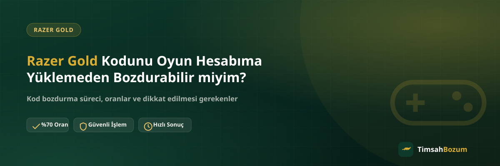

Elinde kullanmadığı bir Razer Gold kodu olan birçok kişi, kodu bozdurmadan önce önce kendi oyun hesabına yüklemesi gerekip gerekmediğini soruyor. Bu soru özellikle hediye olarak gelen kodlarda sık karşımıza çıkıyor, çünkü bazı kullanıcılar kodu "güvenceye almak" için önce hesabına yüklemeyi düşünüyor. Oysa bu adım, bozdurma işlemini kolaylaştırmak yerine tam tersine zorlaştırabilir.
Razer Gold Kodu Hesaba Yüklemeden Paylaşılabilir mi?
Evet, kesinlikle. Razer Gold kod tabanlı bir hizmettir; yani bozdurma işlemi için gereken şey kodun kendisidir, bir hesap bakiyesi değil. Kodun üzerindeki karakterleri doğru ve eksiksiz şekilde paylaştığında, kod herhangi bir hesaba yüklenmeden de değerlendirilip bozdurulabilir. Aslında TimsahBozum'da işlemi hızlandıran yöntem tam olarak budur: kodu olduğu gibi, kullanılmamış hâliyle paylaşmak.
Kodu Oyun Hesabıma Yüklersem Ne Olur?
Kodu bir Razer Gold hesabına yüklediğinde, kod artık tekil bir "kod" olmaktan çıkar ve o hesabın bakiyesine dönüşür. Bu noktadan sonra elinde paylaşılabilecek bir kod kalmaz, hesabında bir bakiye kalır. TimsahBozum'da Razer Gold hizmeti kod tabanlı olarak çalıştığı için, hesaba yüklenmiş bir bakiyenin bozdurulması bu kapsamda değildir. Bu yüzden kodu kullanmadan, olduğu hâliyle saklamak ve paylaşmak en doğru yaklaşımdır.
Kod Zaten Hesabıma Yüklenmişse Ne Yapmalıyım?
Belki de bu soruyu kodu çoktan yüklediğin için soruyorsundur. Böyle bir durumda ilk yapman gereken şey tahmin yürütmek yerine durumu WhatsApp üzerinden anlatmak. Kodun hâlâ kullanılmamış olup olmadığı, hangi platforma yüklendiği gibi detaylar değerlendirmeyi etkileyebilir; bu yüzden net bir cevap almak için güncel durumu olduğu gibi paylaşman en sağlıklısı.
Kodu Yüklemeden Paylaşmak Neden Daha Hızlı Sonuçlanır?
Kod hâlâ kullanılmamışken paylaşıldığında, karşı taraf kodun geçerliliğini doğrudan değerlendirebilir ve süreç tek adımda ilerler. Kod bir hesaba yüklendiğinde ise önce bu durumun netleştirilmesi, ardından değerlendirmenin yapılması gerekir; bu da işlemi uzatan ekstra bir adım demektir. Dolayısıyla elindeki kodu hiç dokunmadan, satın alındığı veya hediye geldiği hâliyle paylaşman en pratik yol.
Kodumu Paylaşırken Nelere Dikkat Etmeliyim?
Kodun tüm karakterlerini eksiksiz ve doğru şekilde iletmek en önemli adım. Kartın üzerinde kazınabilir bir alan varsa bu kısmı dikkatlice kazıman, kodu yanlış okumanı önler. Kodu yazarak paylaşmak genelde ekran görüntüsünden daha pratiktir, çünkü karakterlerin karışması veya net okunmaması riski azalır. Kodu kimseyle senden habersiz paylaşmaman, kodun kullanılmamış kalmasını garanti eden en basit önlemdir.
Hediye Olarak Gelen Kodda Bu Kural Değişir mi?
Hayır, kuralın işleyişi kodun hediye olarak gelmiş olmasından bağımsızdır. Arkadaşından veya bir platformdan hediye aldığın bir Razer Gold kodunu da kendi hesabına yüklemene gerek kalmadan, olduğu hâliyle paylaşabilirsin. Önemli olan tek şey, kodun hediye geldiği anda kullanılmamış durumda olması ve karakterlerinin eksiksiz şekilde elinde bulunması. Kodu hediye aldıktan hemen sonra, bir hesaba yüklemeden değerlendirmeye almak, hem senin hem kodu hediye eden kişinin aklını rahatlatan en pratik adım.
Kısmi Bozum Mümkün mü?
Hayır. Razer Gold kod tabanlı bir hizmet olduğu için kodun tam değeri tek seferde değerlendirilir, kısmi bozum söz konusu değildir. Bu durum kodun hesaba yüklenip yüklenmemesinden bağımsız olarak geçerlidir; kodu paylaştığında kodun tüm değeri üzerinden bir oran uygulanır.
Hesaba Yüklenmiş Bir Kod Geri Alınabilir mi?
Bir kod bir oyun platformuna bir kez yüklendiğinde, bu işlem genellikle platform tarafından geri alınamayan bir adımdır. Bu yüzden elindeki kodu bozdurmayı düşünüyorsan, karar vermeden önce kodu yüklememen en güvenli yaklaşım. Kod zaten yüklendiyse geriye dönük bir çözüm aramak yerine, mevcut durumu olduğu gibi WhatsApp'tan iletip değerlendirme istemen en doğru adım; bu durumda kodun artık hesap bakiyesine dönüştüğü göz önünde bulundurularak bir yanıt verilir.
Kodu Paylaşmadan Önce Bir Yere Not Almalı mıyım?
Kodu WhatsApp üzerinden paylaşmadan önce kart üzerindeki karakterleri bir kenara not etmen veya kartın kendisini elinde tutman faydalı bir alışkanlık. Paylaşım sırasında bir karakter eksik yazılır veya yanlış okunursa, bu kayıt sayesinde kolayca kontrol edip düzeltme yapabilirsin. Bu basit önlem, özellikle kartın fiziksel olarak kaybolma ihtimaline karşı da bir güvence sağlar; kodu kullanmadığın sürece bu notu saklaman herhangi bir riske yol açmaz.
İşlem Süreci Nasıl İşler?
Süreç basit: WhatsApp hattımıza (+90 543 887 21 71) yazarsın, kullanılmamış kodunu paylaşırsın, güncel oranı teyit edersin ve onay sonrasında ödeme WhatsApp üzerinden görüşülen yöntemle yapılır. Üyelik, form doldurma veya kimlik belgesi istenmiyor; hesabına erişim de talep edilmiyor. Sana hiçbir zaman SMS doğrulama kodu sorulmaz, böyle bir talep gelirse bu dolandırıcılık şüphesi anlamına gelir.
Bu Kural Diğer Kod Tabanlı Hizmetler İçin de Geçerli mi?
Evet. iTunes kodu gibi diğer kod tabanlı hizmetlerde de mantık aynı: kod, herhangi bir hesaba (Apple ID dahil) yüklenmeden de bozdurulabilir ve kodun tam değeri tek seferde değerlendirilir. Bakiye tabanlı hizmetlerde (Pokus, Paycell, mobil ödeme) ise durum farklıdır; orada zaten bir hesap bakiyesi bozduruluyor ve kısmi bozum da mümkündür. Bu ayrımı bilmek, elindeki ürünün hangi mantıkla değerlendirileceğini önceden anlamanı sağlar.
İlgili Yazılar
- Razer Gold Kodu Kullanılmışsa Ne Olur?
- Razer Gold Kodu Neden Tam Değeri Üzerinden Bozdurulur?
- Razer Gold Kodunu Kaybedersem Ne Olur?
Elindeki Razer Gold kodunu hesabına yüklemeden, olduğu hâliyle değerlendirmek istersen en hızlı cevabı Razer Gold bozdurma hattımızdan alabilirsin. Kodunu paylaşarak güncel oranı WhatsApp üzerinden hemen teyit edebilirsin.